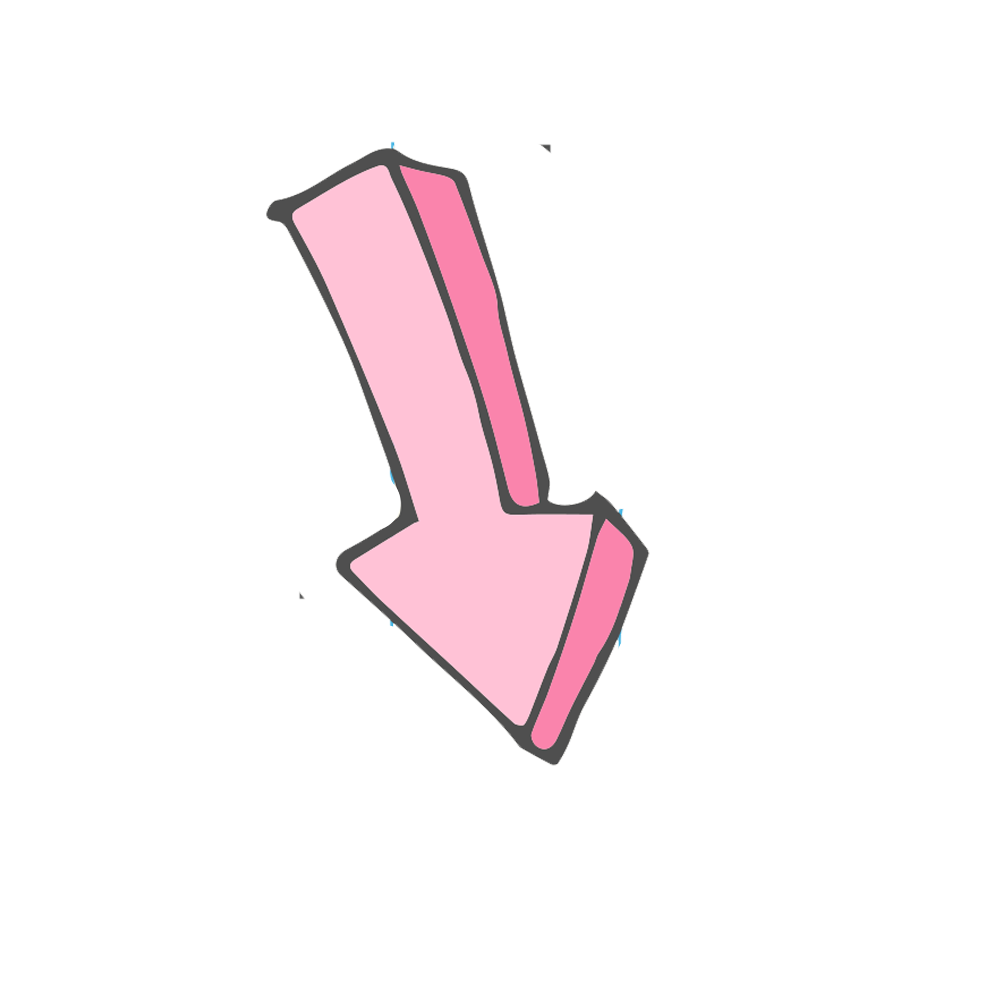

Министерство не твоих кошачьих дел
Неподражаемый, сексуальный и пушистый
Николай
или
почему ему все завидуют?
На нашем сайте в деталях представлена информация о жизни и личности
Великого Николая I, кота Алтуфьевского и всея Руси
Великого Николая I, кота Алтуфьевского и всея Руси
Прикоснуться к великому
